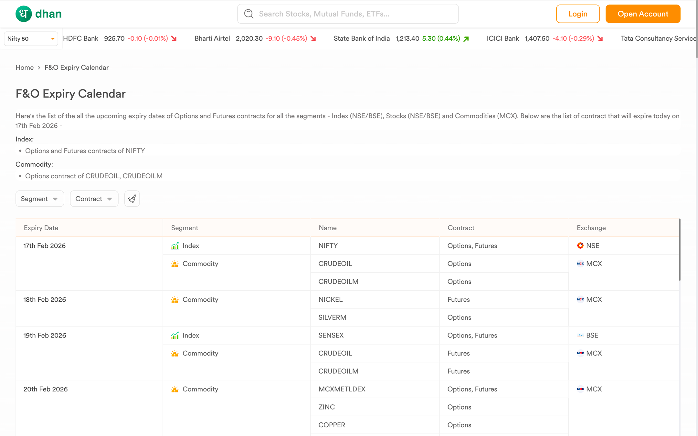
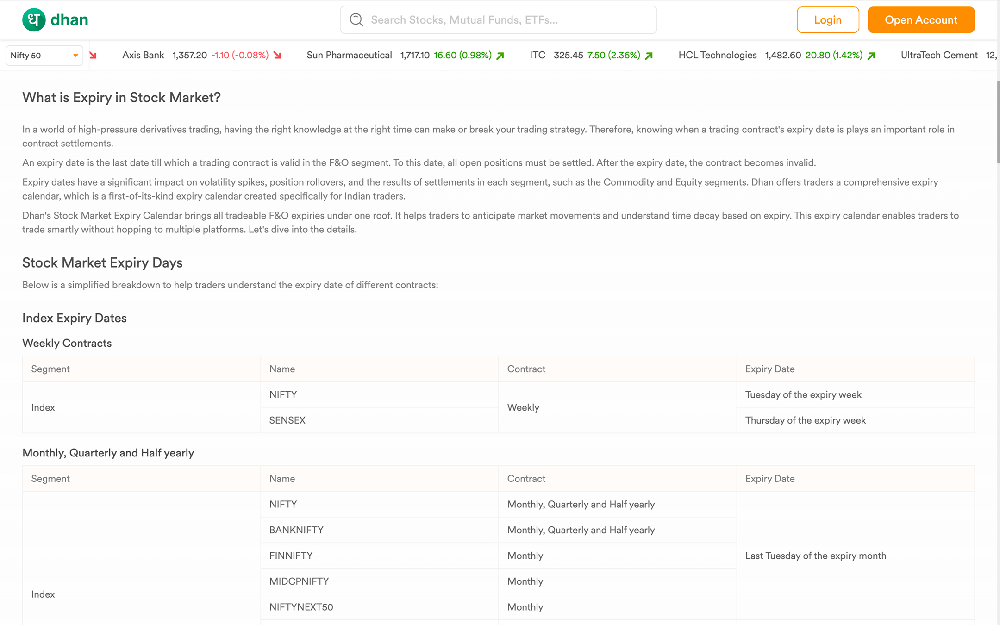
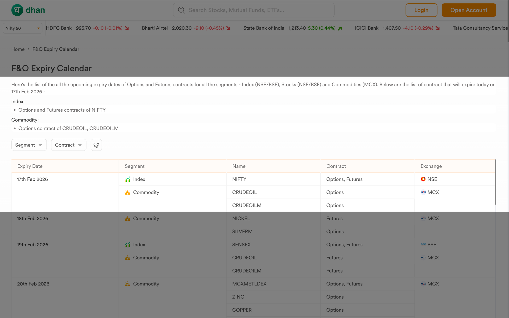
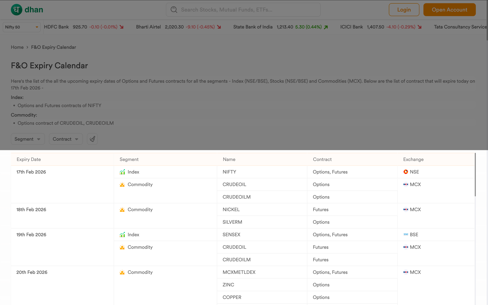
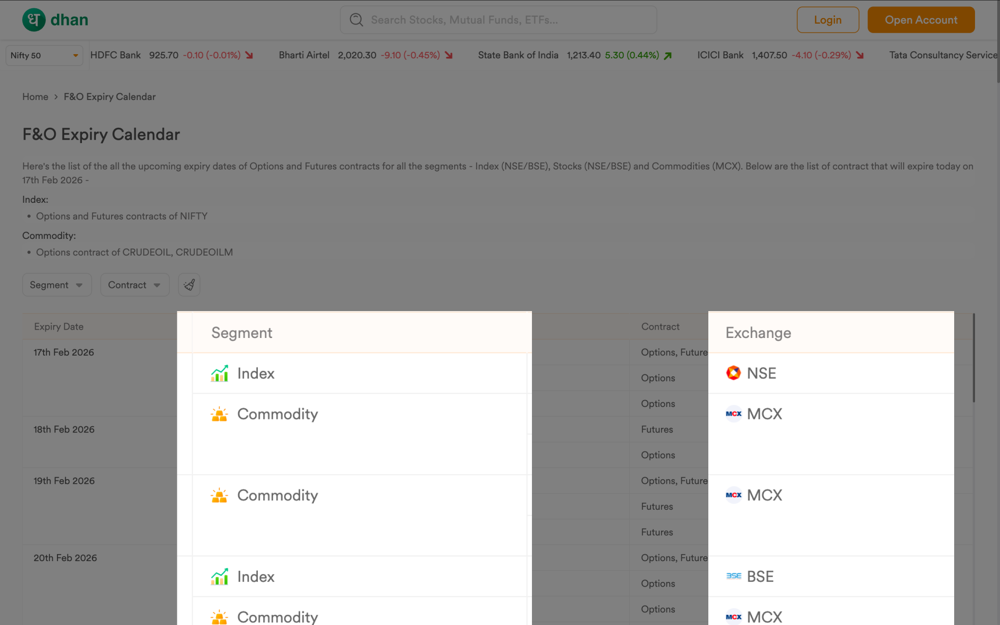
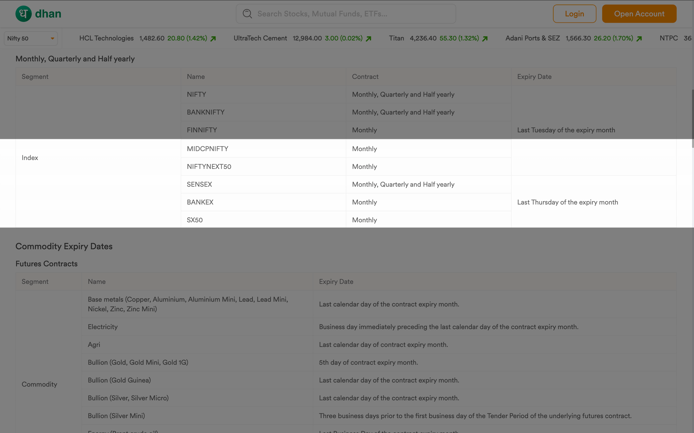

Team
|
1 - Assistant Manager, SEO |
1 - Product Designer (Myself) |
|
2 - Engineers |
What’s Dhan?
Dhan is a technology-led stock trading and investing platform built for India’s active market participants. It solves the problem of slow, outdated brokerage interfaces by offering lightning-fast execution and deep integration with tools like TradingView.
The platform serves two distinct user personas:
Super Traders - Who need speed, advanced charts & F&O capabilities.
Long-Term Investors - Who focus on wealth creation through SIPs & IPOs.
What’s the problem statement?
Active traders dealing in Options and Futures (FnO) struggle to track expiry dates because the data is fragmented across multiple segments (Index, Stocks, Commodities) and exchanges (NSE, BSE, MCX). There was no single source of truth, forcing traders to manually track dates.
Why does this problem exist?
Exchanges operate independently. NSE, BSE, and MCX release their trading schedules and holiday circulars in disparate formats (PDFs, separate webpages). Furthermore, calculation rules differ (e.g., "Last Thursday" vs. "Last Friday"), and holiday logic (shifting expiry to the previous trading day) adds a layer of complexity that static calendars often miss.
Why should Dhan solve for it?
User Value (Clarity): Eliminates cognitive load. Traders can plan their week and capital allocation without manual research or fear of operational errors (like forced physical delivery).
Business Value (Acquisition & Retention):
SEO Magnet: Expiry dates are high-intent search queries. Capturing this traffic brings potential users directly into the Dhan ecosystem.
Engagement: Keeping the user on the platform increases the likelihood of executing trades within Dhan.
Non-negotiable rules
Zero Ambiguity: Dates must be absolute. If a holiday shifts an expiry, the UI must reflect the actual trading day, not the theoretical one.
Scannability First: Traders shouldn't read; they should scan. Use clear visual hierarchy to distinguish between Index, Stock, and Commodity segments immediately.
Glanceable Context: Show "Days Left" (e.g., "Expiring in 2 Days") alongside the date to help with mental modeling of time.
FTUX for FnO Expiry Calendar
I designed a split-view interface that serves two distinct user modes:
- Active Planning (The Tool)
- Market Education (The Knowledge Base)


The "Today’s Expiry" Alert

Instead of forcing users to hunt for today's date in a list, I extracted the most critical data point what expires right now and placed it in a dedicated text summary at the top (e.g., "Below is the list of contracts that will expire today...").
This targets the "Anxiety" pain point. It gives traders immediate confirmation on their open positions without them needing to filter or scroll.
Chronological "Timeline" View

The main table is strictly sorted by date (Feb 17, Feb 18, Feb 19), mixing segments (Index, Commodity) into one flow rather than separating them into tabs.
Traders experience time linearly. They need to know "What is happening this week?" across all their holdings. This unified view prevents the "out of sight, out of mind" error where a trader focuses on Nifty but forgets their Crude Oil position is expiring.
Visual Scannability

I used distinct visual markers a green graph icon for Index and gold bars for Commodity along with explicit exchange logos (NSE, MCX).
This allows users to "read by shape" rather than text. A user scanning for Commodities can ignore all green icons, significantly speeding up data processing.
The "Trust Layer"

Below the interactive tool, I included static tables explaining the rules of expiry (e.g., "Index Monthly contracts expire on the last Thursday").
This serves two purposes:
- Trust & Verification: It shows the math behind the calendar. If a user questions a date, the rule is right there to verify it.
- SEO Strategy: These tables are rich with keywords ("Stock Market Expiry Days", "Weekly Contracts"). This content is the primary driver for capturing traffic from users asking "How is Gold expiry calculated?"
Early Performance Signals
Data observed after Launch -
The feature became an immediate organic growth engine, validating the hypothesis that this was a high-demand utility.
1,12,000+ Total Impressions.
2,000+ Clicks driven directly to the platform (High-intent traffic).
Achieved an Average Rank of 7.5 on Google, securing first-page visibility for competitive keywords.
What I Learned
Utility is Marketing: Building a useful "side tool" can sometimes drive more organic acquisition than traditional marketing campaigns.
Design for Trust: In fintech, accuracy is the primary design feature. Automating the holiday logic was critical; one wrong date would have destroyed user trust instantly.
SEO & UX Alignment: Good information architecture (clear headers, structured data) doesn't just help users it helps search engines understand and rank the content, creating a flywheel of visibility.